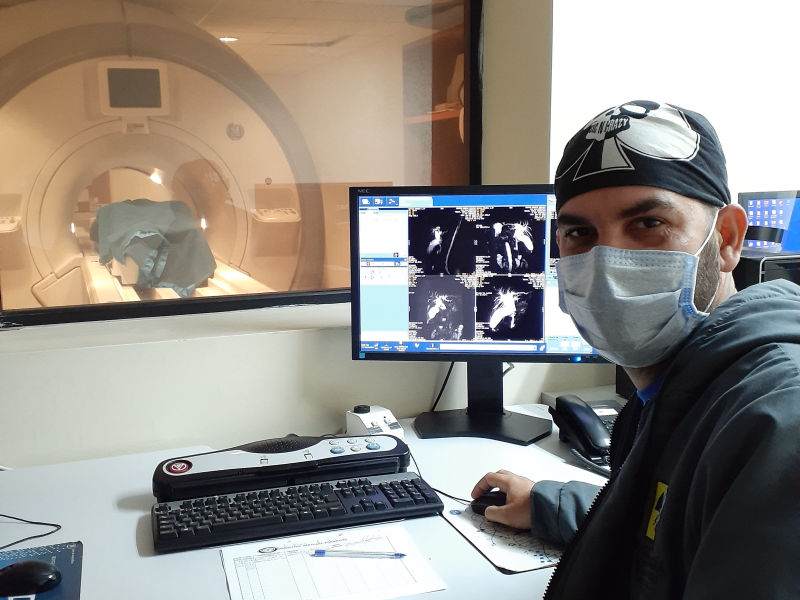

¿Qué es la Ingeniería Biomédica?
Es una disciplina que aplica principios de ingeniería, informática y ciencias de la vida para resolver problemas en el ámbito de la salud...
Áreas de aplicación
Incluye campos como la bioinstrumentación, imágenes médicas, ingeniería clínica, diseño de prótesis, biomateriales, informática médica y robótica aplicada en contextos clínicos.
Importancia en la salud
La ingeniería biomédica optimiza procesos hospitalarios, reduce riesgos quirúrgicos y potencia el desarrollo de tecnologías médicas innovadoras, beneficiando directamente al personal médico y a los pacientes.